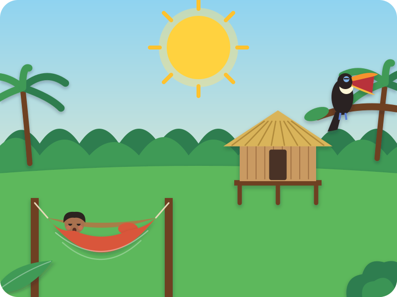
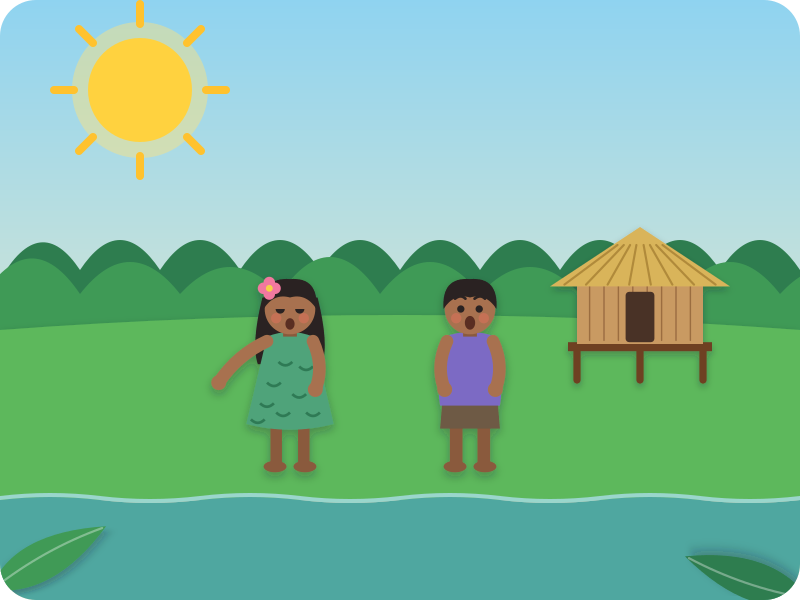
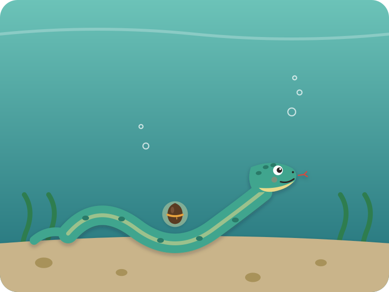
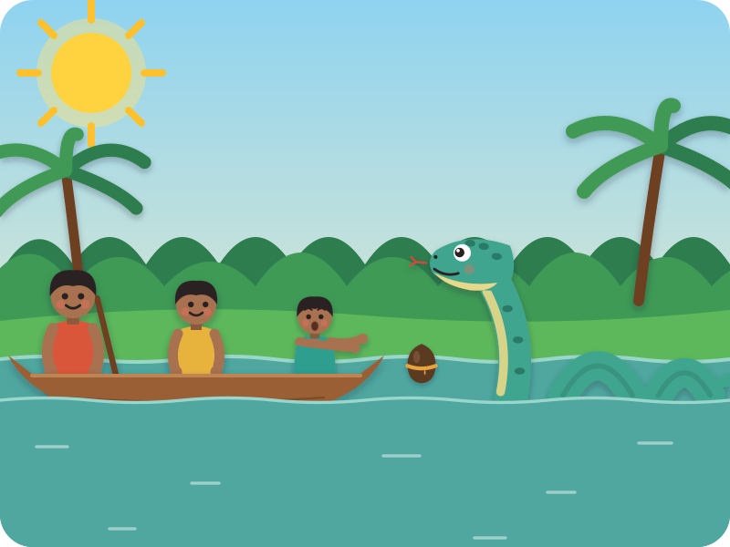
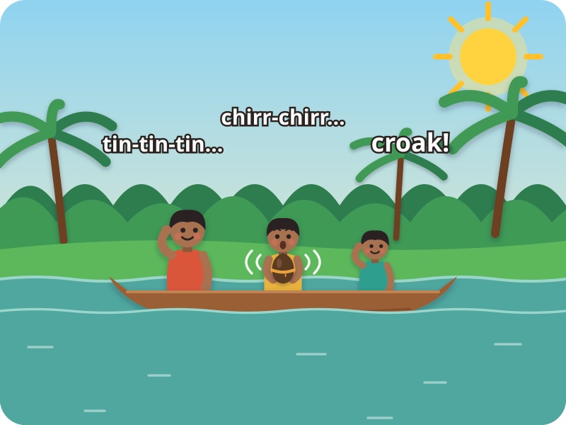
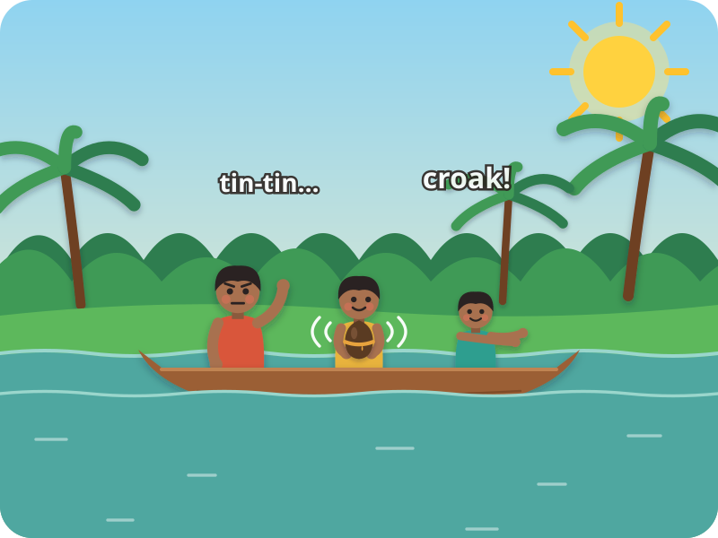
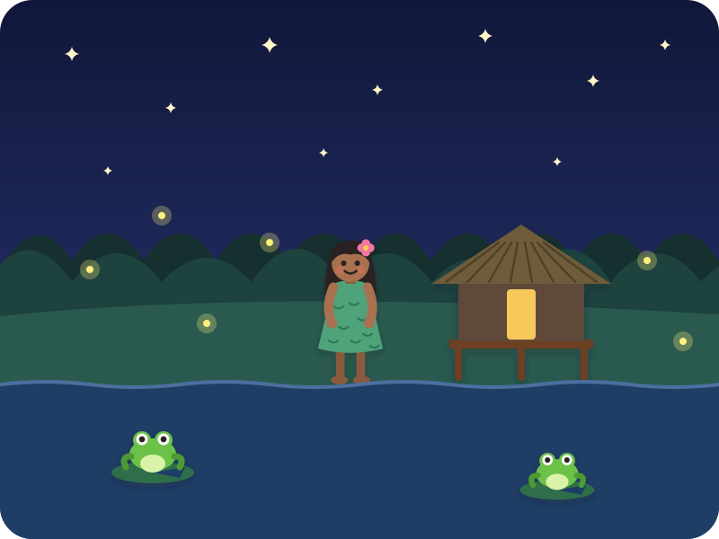
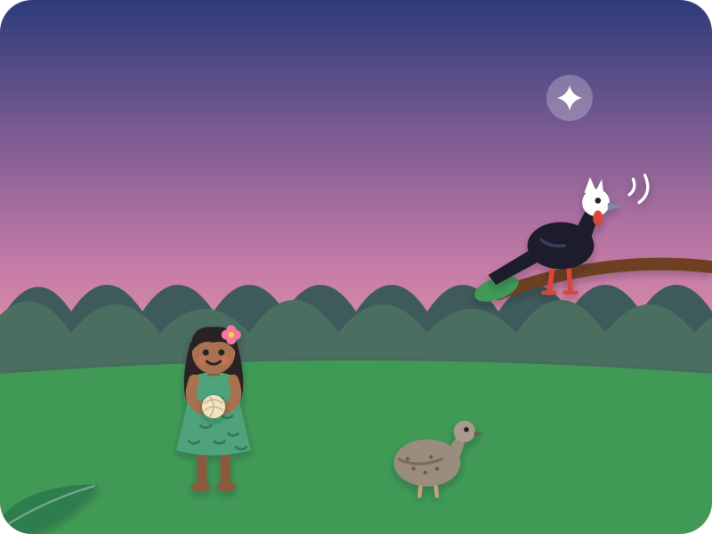
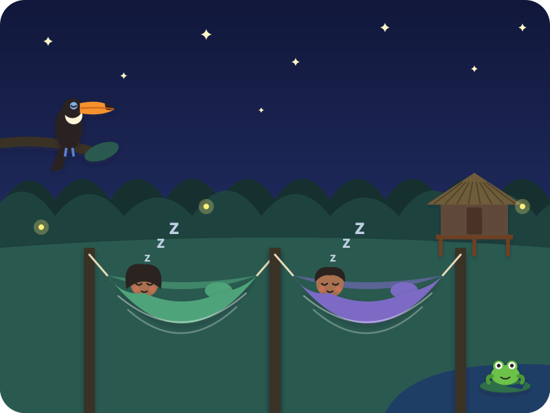

An Indigenous story from the Brazilian Amazon
How the Night Came
"Story, story — are your ears open?" Kai: "Open!"

Long, long ago, there was no night at all. Only day, day, day.
The sun shone and shone. Everybody was tired, but nobody could sleep. Not the people in their hammocks. Not even the toucan. Kai gives a big yawn

A young man married the daughter of the Great Snake, who lived in the river.
"I can't sleep when it's day," she sighed. "My father keeps the night at the bottom of the river. Please — send someone to ask him for it."

Deep, deep down, at the bottom of the river, the Great Snake was resting.
And beside him, shut tight inside a hard little tucumã nut, the whole night lay curled up, fast asleep. Kai whispers "shhh"
So the young man sent his three helpers. Off they went in their canoe.
"Paddle, paddle, down the river!" Kai paddles with both arms

Up rose the Great Snake. He gave them the tucumã nut, sealed all round with sticky wax.
"The night is inside," he said. "Take it home — and do not open it on the way!"

They paddled home. But then… the nut started to make a noise!
"Tin-tin-tin… chirr-chirr… CROAK!" Kai makes the night-sounds
"What's that?" said the helpers.

"Just a little peek?" said the littlest helper.
"No!" said the oldest. "We promised." Kai: "No!"
But the nut kept on singing. "Tin-tin-tin… chirr-chirr… CROAK!"
Far from home, the helpers just couldn't wait any more.
They stopped on a sandy bank and lit a tiny fire, to make the sticky wax go soft. Drip… drip…
"Only a tiny peek," they said.
POP! Kai claps once Out spilled the night!
Darkness poured across the sky. The helpers were so surprised they squeaked like little monkeys — "Eee-eee-eee!"

But the night wasn't scary. It was soft, like a big blue blanket.
Stars came out. Fireflies blinked. Frogs sang. And at home, the Great Snake's daughter smiled. "Night at last!"
And everybody had a good long sleep.

Before morning, she saw the morning star. "Now night and day will take turns," she said.
From a ball of string she made two birds. The cujubim, to sing when the morning comes. And the soft grey inambu, to call quietly in the night.

And ever since, night and day take turns. When the cujubim sings, it's time to wake up.
And when the night comes… tin-tin… chirr… croak… Kai whispers it, very softly
…everybody sleeps. Shhh. Goodnight.
The End
"Snip, snap, snout — this tale's told out."
Swipe back to read it again
Driving? Tell it without the page · six beats
The picture book is for home, bedtime, or a passenger. In the car, tell it from memory — bold is Kai's part.
- Long ago there was only day — no night at all — and everybody was tired but nobody could sleep: a great big yawn.
- The Great Snake's daughter says her father keeps the night at the bottom of the river, so three helpers set off in a canoe: paddle, paddle!
- The Great Snake gives them a tucumã nut sealed with wax: "The night is inside. Don't open it on the way!"
- On the way home the nut makes a noise: "Tin-tin-tin… chirr-chirr… CROAK!" "Just a peek?" "No! We promised."
- But they melt the wax by a little fire and peek — POP! — and out spills the night, with stars, fireflies and singing frogs. The helpers squeak like monkeys: "Eee-eee-eee!"
- The daughter makes the cujubim bird to sing at morning, so night and day take turns — and when the night comes, tin-tin… chirr… croak… (whisper) everybody sleeps.
After the story · car-friendly wondering
"What sounds can you hear when it gets dark at our house?"
"Would you have peeked inside the nut? Why is it so hard to wait?"
"What would be tricky if there were no night at all?"
Where this story comes from
This is an Indigenous story from the Brazilian Amazon, told in the Tupi-based língua geral. It was written down by José Vieira Couto de Magalhães, a Brazilian politician and soldier, in his book O Selvagem (Rio de Janeiro, 1876), which prints a set of legends in that language (today called Nheengatu) alongside Portuguese translations; it's often known in Portuguese as Como a noite apareceu, "How the night appeared". Couto de Magalhães was an outsider recording other people's stories, so his version is one telling filtered through his own book, not the only or the "real" one, and we can't say exactly whose telling he heard. In his version there is only day, the night sleeps at the bottom of the waters, the Great Snake's daughter asks her husband to send for it, and his three servants are given a sealed tucumã nut and warned not to open it; on the way home they hear crickets and little frogs singing inside ("tem, ten, ten… xi"), light a fire in the canoe to melt the seal, and let the darkness out. Then everything scattered in the forest turns into animals and birds, and the three servants are turned into monkeys as a punishment. The daughter, seeing the morning star, separates night from day by making two birds from thread: the cujubim to sing at daybreak and the inambu to sing at different times of the night and at dawn. This retelling is our own, for a 4-year-old at bedtime: everybody is tired (in the old story it is mainly the daughter who wants the night), the helpers' disobedience is made gentle, they stop on a sandy bank to light their little fire (in the old story it is lit in the canoe), and we dropped the transformations — the helpers only squeak like monkeys for a moment, as a playful nod to the old ending, and stay helpers. The "tin-tin-tin… chirr-chirr… croak" refrain is our English echo of the insect-and-frog sounds in the original, and the toucan, the hammocks and the final goodnight are our picture-book additions. We used an English translation of Couto de Magalhães's text rather than the 1876 book itself, so small details may differ between editions.